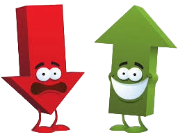
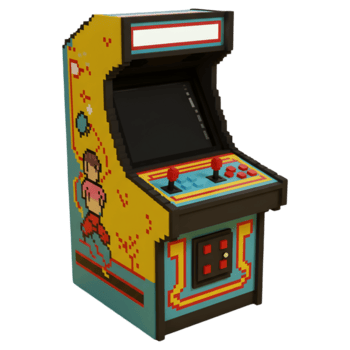
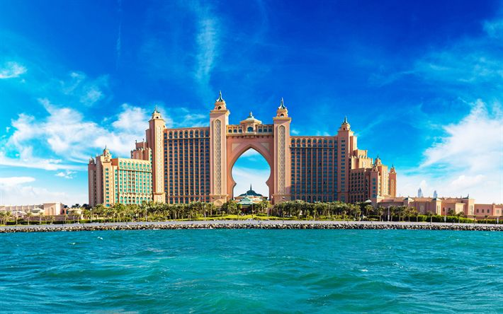

Werk in ontwikkeling
Praktische projecten met focus op duidelijke interactie.
Hier staan projecten die passen bij mijn opleiding ICT Software Development. Ik let op nette code, bruikbare interfaces, samenwerking via GitHub en oplossingen die logisch werken voor de gebruiker.

Hoger Lager
Een interactieve browsergame waarin spelers raden welk object duurder is. De focus ligt op duidelijke feedback, eenvoudige spelregels en JavaScript-logica.
Bekijk op GitHub
Game room
Een browser-gebaseerd Gameroom met een functioneel bord en speelbare stukken. Gebouwd om DOM-manipulatie en spelinteractie beter te begrijpen.
Bekijk project
Chess Course
Een show-your-skills project over schaken. Dit is geen schaakbord-game, maar een cursusgerichte website waarin schaakconcepten en presentatie centraal staan.
Bekijk op github
Review Your Experience
Een reviewconcept voor gastenervaringen, gemaakt met PHP en CSS. Het project draait om formulieren, duidelijke informatie en een nette presentatie.
Bekijk op GitHub
Maze Game
Een doolhofproject waarin de speler door een grid navigeert. Dit project draait om logica, beweging en het vertalen van spelregels naar code.
Bekijk visualProject Dashboard
Een teamdashboard voor het project Fisabililah. Dit project laat zien dat ik kan werken aan een grotere applicatiestructuur met overzichtelijke schermen en gedeelde code.
Bekijk op GitHub